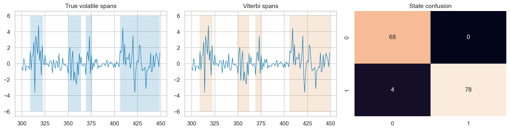

ML Hands-on Lab · 04 — Probabilistic and graphical
Hidden Markov models and Viterbi
1. The decision and the mechanism
Viterbi finds the single most likely sequence of hidden states by combining evidence at each time with the cost of changing state. A noisy observation need not cause an immediate state flip if the transition model strongly favors persistence.
This lesson includes the mechanism, a hand-worked example, and the experiment design. The paired notebook contains the complete runnable setup and produces the diagnostic figure below.
2. Work a small example
Imagine returns generated by either a calm or a volatile regime. Both have mean zero, but volatile observations have a larger standard deviation. One large return supports volatility; several consecutive observations and the probability of regime persistence determine the best sequence. The notebook estimates model parameters from labelled synthetic training regimes, then decodes the hidden states of a later sequence. It teaches supervised parameter estimation and Viterbi decoding, not unsupervised Baum–Welch learning.
Two observations: local evidence can lose to sequence evidence
Use priors [0.8 calm, 0.2 volatile]. At time 1, emission likelihoods are [0.8, 0.2], so best starting path probabilities are [0.64, 0.04]. Transitions are calm→calm 0.9, calm→volatile 0.1, volatile→calm 0.2, volatile→volatile 0.8. At time 2, emissions are [0.2, 0.6]. The best calm-ending path scores max(0.64 × 0.9, 0.04 × 0.2) × 0.2 = 0.1152. The best volatile-ending path scores max(0.64 × 0.1, 0.04 × 0.8) × 0.6 = 0.0384. The winning path stays calm even though the second observation alone favors volatility.
3. The mathematics, with meanings
\[\delta_t(s)=\max_r\{\delta_{t-1}(r)+\log a_{rs}\}+\log p(x_t\mid s)\]
δt(s) is the best log probability of any partial path ending in state s at time t. ars is the transition probability from previous state r to current state s. The emission likelihood measures how compatible the observation is with state s. Log probabilities turn products into sums and avoid underflow on long sequences.
For every current state, store both the winning score and the previous state that produced it. Once all observations are processed, start at the highest-scoring final state and follow those stored predecessors backward. Keeping only the best predecessor is valid because paths reaching the same state face the same possible future continuation under the Markov assumption.
4. Follow the actual experiment
- Simulate 450 observations from a two-state process. Calm and volatile standard deviations are 0.5 and 2.0, and transitions are persistent.
- Use the first 300 observations and their known simulation labels to estimate each state’s standard deviation, transition counts, and prior frequencies. Add one to every transition count so no transition has zero estimated probability.
- Decode the remaining 150 observations with the recurrence and backpointers. Test labels are withheld from the decoder and used only to score the resulting path.
- Compare with emission-only classification, which chooses the state with the greater observation likelihood independently at each time.
- Replace the learned transition matrix with an extremely sticky matrix and decode the same observations again. Inspect whether persistence erases real short regimes.
5. Controls worth changing
| Control | What changing it does | What to inspect |
|---|---|---|
| Transition persistence | Larger diagonal probabilities make a state harder to leave. | State duration, delayed regime changes, and missed short episodes. |
| Emission standard deviations | Control how surprising each return is in a state. | Heavy tails and overlap can make a large observation ambiguous. |
| Add-one transition counts | Prevent log(0) and impossible transitions in a small sample. | Too much smoothing can erase real persistence. |
| Number of states | Adds distinct regimes but also more parameters and ambiguous interpretations. | Whether separate states have distinct emissions and enough transition evidence. |
6. Read the result and its limits
Compare true volatile spans with the decoded path and the emission-only baseline. A better path can suppress isolated false alarms, but a smoother-looking path is not automatically more accurate. Check state-specific mistakes and boundaries as well as overall accuracy: the more common calm state can dominate that aggregate. The figure is a sequence reconstruction, not an online forecasting claim.

Viterbi is offline decoding: a state estimate near the start can depend on later observations. For a decision that must be made immediately, use a filtering distribution based only on observations available so far, or a declared fixed-lag smoother. Also, the most likely complete path is not necessarily the path formed by choosing the most likely marginal state independently at each time.
7. Code that exposes the mechanism
This is the notebook’s actual dynamic program, expanded for readability. values is the observed test sequence, A is a 2 × 2 transition matrix, and scales contains the learned Gaussian standard deviations.
def viterbi(values, A, scales, prior):
T = len(values)
score = np.empty((T, 2))
back = np.zeros((T, 2), dtype=int)
score[0] = np.log(prior) + norm.logpdf(values[0], 0, scales)
for t in range(1, T):
for state in range(2):
candidates = score[t - 1] + np.log(A[:, state])
predecessor = int(np.argmax(candidates))
back[t, state] = predecessor
score[t, state] = (
candidates[predecessor]
+ norm.logpdf(values[t], 0, scales[state])
)
path = np.zeros(T, dtype=int)
path[-1] = int(np.argmax(score[-1]))
for t in range(T - 2, -1, -1):
path[t] = back[t + 1, path[t + 1]]
return pathFor S states and T observations, this recurrence requires O(TS²) transition comparisons and stores O(TS) backpointers. A greedy label-per-observation rule is cheaper, but discards the transition structure that defines the model.
8. Break an assumption
The notebook sets both stay probabilities to 0.9995. That model believes changes are extraordinarily rare. A short cluster of large observations may then be explained away as unlikely noise in the calm regime rather than a real volatile spell. The failure is in the model assumptions, not in the dynamic program: Viterbi can solve the wrong model exactly.
- Run the two-observation example with calm→volatile increased to 0.4 and calm→calm reduced to 0.6. Recompute both ending scores.
- Compare transition-aware and emission-only labels around a true boundary. Separate delayed transitions from isolated false positives.
- Generate heavier-tailed calm observations. Explain why a Gaussian emission model may invent volatile states to explain outliers.
9. When to use it and what comes next
Use sequence decoding for retrospective state labeling when a small set of persistent regimes and meaningful emission models are defensible. Use a forward filter for real-time state probabilities, a forward–backward smoother for marginal retrospective probabilities, and Baum–Welch or other estimation methods when training state labels are unavailable. Those are different operations from the Viterbi path implemented here.